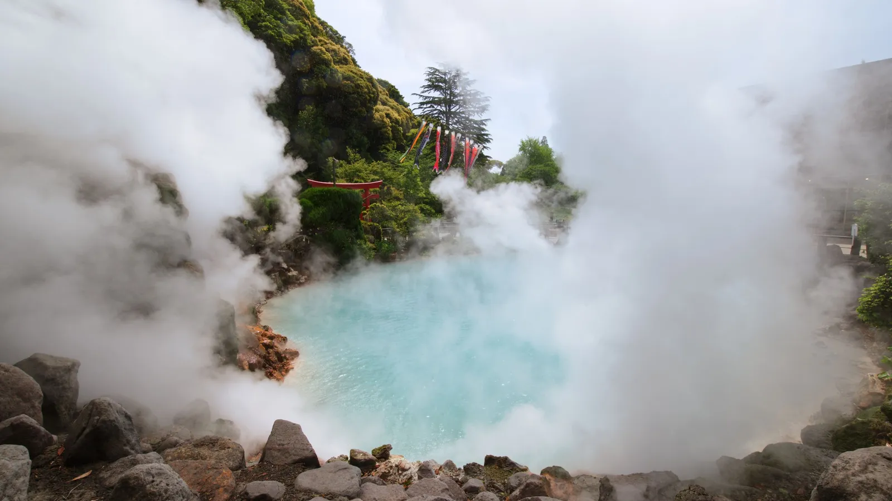
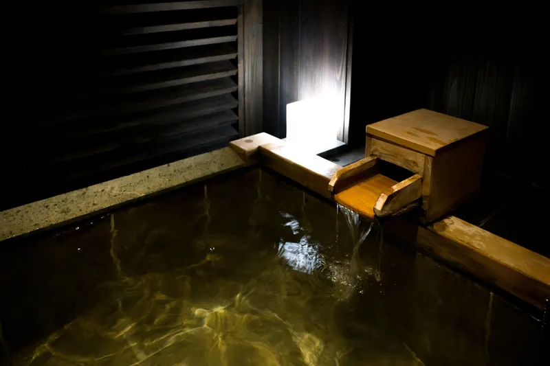

The short answer
An onsen is a Japanese hot spring bath, and it is one of the best things you can do in Japan, especially in winter. The rules sound strict but are simple: you bathe completely naked, separated by gender, you wash thoroughly before getting in, and the small towel never goes in the water. If you have tattoos, check the rules first or book a private bath.
Onsen, sento and ryokan: what's the difference
- Onsen: the water comes from a natural hot spring. It can be a public bathhouse, a spa resort or the bath of a hotel.
- Sento: a neighbourhood public bath with heated tap water. Cheaper and more local; the etiquette is the same.
- Ryokan: a traditional inn, often in an onsen town, with shared baths and sometimes private ones. Staying one night is the most complete way to try it.
- Rotenburo: an open-air bath. In winter, sitting in hot water while it snows is the experience everyone remembers.
- Kashikiri-buro: a private bath you can book by the hour, alone or with your partner or family.
Step by step
- Take your shoes off at the entrance and put them in the lockers.
- Find the right side: men's bath is usually marked 男 with a blue curtain, women's bath 女 with a red one. The sides are sometimes swapped between morning and evening, so check every time.
- In the changing room, undress completely and leave your clothes and big towel in a basket or locker. Take only the small towel.
- In the washing area, sit on the small stool in front of a shower, and wash your whole body and hair with soap. Rinse well and leave the area clean for the next person.
- Tie up long hair and enter the bath slowly. Don't swim, don't splash and don't put your head under.
- Soak for 5–10 minutes at a time, get out to cool down, then go back in if you like.
- Before going back to the changing room, pat yourself dry with the small towel so you don't drip on the floor.

The 10 rules
- No swimsuits: everyone is naked, and nobody looks.
- Wash before getting in, never in the bath.
- The small towel never touches the water: put it on your head or on the edge.
- Long hair tied up, out of the water.
- No soap or shampoo in the bath.
- No phones and no photos in the bath area.
- Speak quietly: it is a place to relax.
- No alcohol before bathing, and drink water after: the hot water is tiring.
- Don't wring your towel into the bath.
- If you feel dizzy, get out and rest. People with heart conditions or high blood pressure, and pregnant women, should ask a doctor first.
Tattoos: can you go in?
Many onsen still refuse people with tattoos, because in Japan they are associated with the yakuza. Things are changing, and more places say clearly that they are tattoo-friendly. Your options:
- Check before you go: the rule is usually on the website, on a sign at the entrance or in reviews.
- Small tattoos: many places accept them if you cover them with a waterproof sticker or plaster.
- Book a private bath (kashikiri-buro) or a room with its own bath at a ryokan: nobody checks.
- Sento are usually more relaxed about tattoos, but it is always better to ask.
What to bring
- Most onsen give you or rent you towels; at a sento you may have to bring your own or rent them for a few hundred yen.
- Soap and shampoo are almost always provided at the showers.
- A coin for the lockers (often returned) and a hair tie.
- At a ryokan you get a yukata (cotton robe) to wear to the bath and to dinner: wrap the left side over the right.
Where to try one
- Hakone: the easiest from Tokyo, with ryokan and day-use baths. See our Tokyo to Hakone guide.
- Hokkaido in winter: open-air baths in the snow, as in our Hokkaido winter guide.
- Beppu (Kyushu): the city with the most hot springs in Japan. Its famous colourful "hells" are only to look at, not to bathe in.
- Kinosaki: a small town with seven public baths, where people walk from one to the next in yukata.
- Dogo Onsen (Matsuyama): one of the oldest onsen in Japan.
Compare ryokan with onsen in Hakone for your dates.
Plan your onsen night
Some links are affiliate links: booking through them costs you nothing extra and helps keep 687 free.
Japan, with the onsen night planned.
687 Japan builds your trip by stages, with trains, the weather and safety alerts, so you can fit a night in a ryokan without stress.
Sources
- JNTO – Guide to Bathing in Japan (official)
- JNTO – Onsen: on tattoos and etiquette
- JNTO – 7 tattoo-friendly onsen in Japan
Checked against these official sites in November 2026. Prices and rules can change: always confirm before you travel.